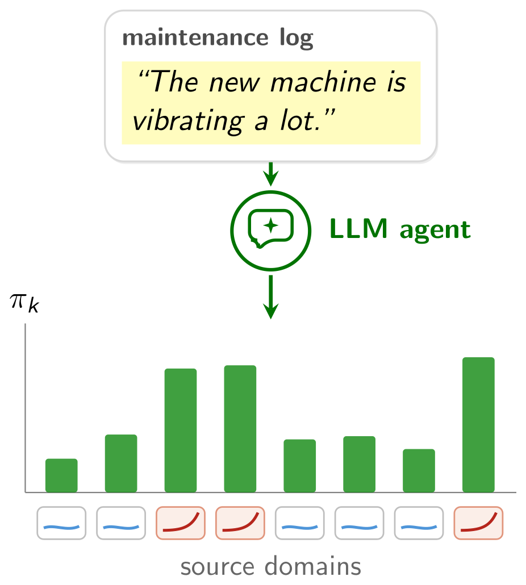
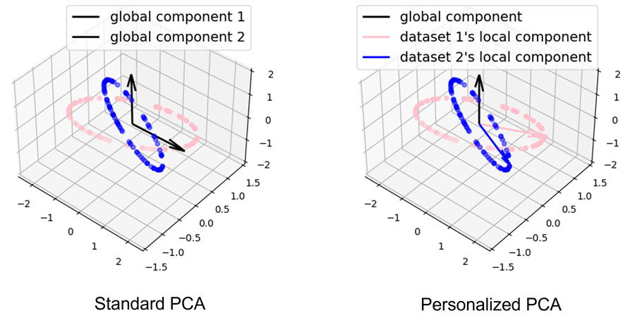
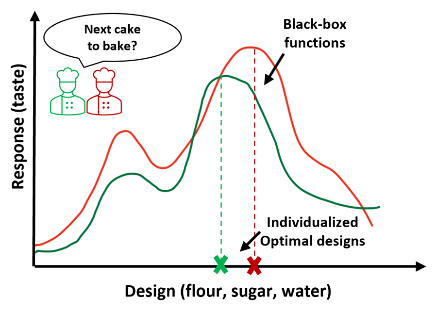

Raed Al Kontar
I lead a data science group in the Industrial & Operations Engineering
(IOE) department at the University of Michigan (UMich).
I work on developing data analytics methods for solving
engineering problems, and I care about both the theory behind them and their use in
practice. My focus is on personalized and distributed data analytics, where knowledge from
diverse data sources is effectively integrated. This allows models to remain tailored to
individual sources, inference to be distributed or decentralized, and personal data to be
protected when needed. I have deployed these methods on manufacturing systems and applied
them in healthcare.
More recently, I have started to explore language as an additional modality
for improving decision-making, and to bring quality and reliability thinking to AI so that
AI systems can be audited and trusted.
Personalization
Collaboration
Heterogeneity
Federated learning
Uncertainty quantification
Black-box optimization
Digital twins
LLMs
Agentic AI
Outside the university, I am a father and I enjoy playing soccer.
Recent news
-
Now
Outstanding PhD student
Qiyuan Chen is on the job market
Check out his website for his papers and
awards.
-
2026
I was awarded the ASQ Feigenbaum Medal
-
2026
I was awarded the SME Outstanding Young Manufacturing Engineer
Award
-
2026
New
NIH
R01 on preventing medication dispensing errors with risk-sensitive AI
With Jessie Yang and Corey Lester.
-
2025
PhD student Haoyi Song was runner-up
for the best student paper in the Data Mining section at the INFORMS Annual
Meeting
For Inv-Entropy, our work on
uncertainty quantification in language models, now at NeurIPS.
-
2025
PhD student Naichen Shi joined
Northwestern as an Assistant Professor
Jointly in Industrial Engineering & Management Sciences and Mechanical
Engineering.
Featured papers
Qiyuan Chen, Jiayu Zhou,
Raed Kontar (corresponding author) ·
NeurIPS · 2026
When a new system has almost no data, statistical methods cannot tell which related
sources are worth borrowing from, and borrowing from the wrong ones does harm. Yet
text describing the new system, such as maintenance logs or operator notes, is often
available and ignored. We turn it into a prior over the sources, learned from a large
language model, and fold it into an EM algorithm: the prior guides the choice of
sources when data are scarce, and the data take over as they accumulate.

Naichen Shi,
Raed Kontar (corresponding author) ·
Journal of Machine Learning Research · 2024
We decompose heterogeneous datasets into global principal components shared by all
and local components unique to each, enforcing orthogonality so the two span
different subspaces. Unlike traditional PCA such a model is not always identifiable;
we give an identifiability condition based on misalignment of local components, and
show the estimation error shrinks as heterogeneity grows. Heterogeneity turns
out to be a blessing in disguise.

Xubo Yue, Yang Liu, Albert S. Berahas, Blake N. Johnson,
Raed Kontar (corresponding author) ·
IEEE Transactions on Automation Science and Engineering · 2025
Black-box optimization demands extensive trial and error, especially for systems with
many design parameters. We introduce a collaborative framework that dynamically
distributes that effort across potentially heterogeneous clients, bringing the notion
of consensus to optimal design. It closes with a real experiment in which
collaborating chemists optimize the formulation of a hydrogel.

PhD alumni
Working with students at all levels is my favorite part of academia. I have been
incredibly fortunate to have worked with so many outstanding students.
-
2020 – 2025
Assistant Professor, Northwestern University
-
2018 – 2023
Assistant Professor, University of Virginia
-
2018 – 2023
Assistant Professor, Northeastern University
-
2019 – 2023
Applied Scientist, Amazon
Teaching
-
IOE 265
Probability & Statistics for Engineers
Undergraduate · 142 average enrollment
-
IOE/STAT 570
Experimental Design
MS · 63 average enrollment
-
IOE 567/667
Modern Bayesian Data Science
MS & PhD · 16 average enrollment
Course information, upcoming teaching plans and
recent teaching evaluations are on the teaching page.
Recent awards
-
2026
-
2026
SME Outstanding Young Manufacturing Engineer Award
-
2026
INFORMS QSR Teaching Award
To be presented at the INFORMS Annual Meeting.
-
2024
IISE Transactions Service Award
-
2022
NSF CAREER Award
From the Cloud to the Crowd: an enabling solution for the
Internet of Federated Things.
-
Since 2020
15 best paper awards earned with my PhD students
Listed with their papers on the
publications page.
Selected service
-
2026 – 27
President, INFORMS Data Mining Society
Elected President-Elect, then President, of one of the largest
societies at INFORMS.
-
2026 –
Associate Editor, Technometrics
-
2026 –
Chair, IOE Department AI & Innovation Committee
-
2025 – 26
President, INFORMS Junior Faculty Interest Group
Elected Vice-President, then President.
-
2022 –
Associate Editor, IISE Transactions
Education
-
2018
PhD Industrial & Systems Engineering,
University of Wisconsin–Madison
-
2017
MS Statistics,
University of Wisconsin–Madison
-
2014
BE Civil & Environmental Engineering
(minor in Mathematics), American University of Beirut
Valedictorian and commencement speaker